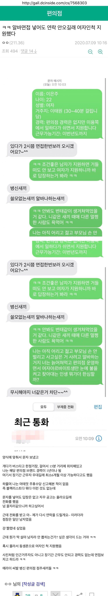

여자직원만 뽑는 영포티 편의점 사장.jpg
댓글
남자 군필인데 몸힘든거 싫어해서 최저로 서비스업함. 근데 사장님한테 경력도 없는데 왜 뽑았냐고 하니까 여성스러워보여서 뽑았다고 함.. 친구들 사이에서 에겐남 소리 졸라 듣긴하는데 인증(?) 받으니까 이상하더라고..
이거 업주입장에서 얘기해주고싶음. 일단 편의점이면 알바몬.알바천국같은곳에 사람구한다고 올릴텐데 남성.여성 차별없이 하라면서 체크가 안됨. 편의점은 오전오후는 보통 여자를 쓸수밖에없음. 야간은 점주본인이 여성이면 가끔하는 경우가있는데 보통은 남성만쓰고. 이건 어쩔수없는거라 남자와 여성이 차이가 있다는걸 인정해야함.
쓸수밖에 없다면서 이유가 없으면 뭘 인정하라는거임
오전오후에 왜 여자를 쓸 수밖에 없는 지 이유가 없는데 뭔 소리야.
나도 주방보조 설거지 뽑으려는거 아줌마 뽑을라 하는데, 김치도 썰어야되고 반찬도 보조로 도와 만들고 해야해서.. 근데 남자만 지원함 ㅡㅡ 사장들 입장에서는 다 이유가 있긴함
업주 입장에서 잘걸렀네 ㅋㅋ
편돌이에 조건 좋은걸 붙이네. 당연히 예쁜 종업원이 매출에 훨씬 기여도가 높을텐데 현실파악 병신새끼 맞네
개붕이들.. 여자만뽑더라<<에 꼿혀서 욕만하고
점장이 답장도 없이 씹더라<< 이건 왜 암말도 없냐
왜긴 본인들 친구연령인 영포티 점장에 더 마음이 가는거지
서비스업에서 남자 뽑기 힘든 이유가 많은데
여러명이 같이 일하는곳->
한쪽 성별만 맞춰두는게 알바간 문제가 생길 가능성이 적음.(2-3인까지는 혼성해도 성향에 따라서 굴러는 감, 알바는 연애하러 오는 곳이 아닌 일하러 오는곳인데… 아닌거 같더라?)
남자 미필- 뽑으면 3개월 내로 군대감
예외도 있는데 90%가 3개월 이상 안함
남자 군필- 제정신 박혔으면 서비스업 아닌 다른 업종으로 감. 서비스업에서 받을 수 있는 금액 이상을 받을 수 있음(일은 더 빡세긴 함) 그래서 특수케이스 아니면 오래 안함
여자- 케바케이나 괜찮은 사람 오면 씩씩하게 잘함
서비스업 돌면서 실업급여 타먹고 이런 사람 아니면 됨
근본적으로 업주는 회사에 이익이 되는 사람을 뽑게됨
서비스업은 여자를 위주로 뽑는게 이익이고 애초에 공급 자체가 여자가 더 많음.
물론 성별을 바꿔서 보면 반대의 경우도 많음.
법으로 규제해봤자 법이 회사 내 문제를 해결해주진 않으니 사장들도 알면서 피해가는것